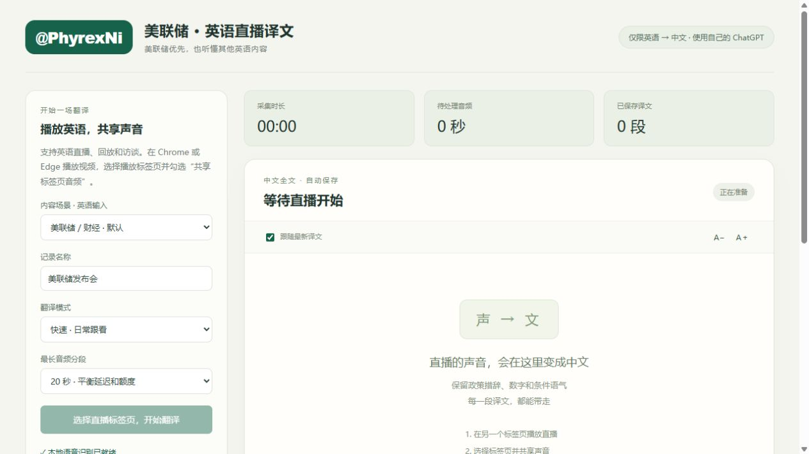

专业术语
覆盖美联储、宏观、金融、通胀和劳动力市场，可自行补充。
美联储优先，也支持其他英语直播、回放和访谈。
用自己的 ChatGPT 账号，在本机保存中文记录。
Windows 10 / 11 x64 · Chrome / Edge · 仅英语 → 中文
需要本机组件，以及支持 Codex 的个人 ChatGPT 账号。尚未上架扩展商店。
覆盖美联储、宏观、金融、通胀和劳动力市场，可自行补充。
每段单独复制译文，自动排除时间戳和“待核实”说明。
中文记录自动保存在本机，可导出文稿和字幕。

使用支持 7z 的工具，例如 7-Zip，解压到一个固定文件夹。不要直接在压缩包里运行。
双击 Install-Connector.cmd，为当前 Windows 用户注册本机连接。
Chrome 地址栏输入 chrome://extensions；Edge 输入 edge://extensions。打开“开发者模式”，选择“加载已解压的扩展程序”，选中解压目录里的 extension 文件夹。
固定扩展并打开侧栏，点击登录，在 OpenAI 官方页面完成。模型权限和用量取决于你的账号。
选择正在播放视频的标签页，并勾选“共享标签页音频”。结束时点“结束采集并保存”，等待译文完成后导出。
已核对 3,159 个包内文件与原始 ZIP 一致，并检查本地语音模型可以识别真实音频。不同电脑上的首次登录和长时间真实直播仍需试用反馈。
译文有分段等待，数字和政策措辞可能存在识别错误。标记“待核实”的内容请结合原音判断。声音在本机识别，识别后的英文与相关上下文会发送给 OpenAI 翻译。
查看完整验证范围 ↗打开 GitHub Releases。请下载完整测试包；“Source code”仅包含此仓库的说明与网页。
24b3c081b4fb9e01a7006493429c02193f4aeb9ade939901592e2be13b775725